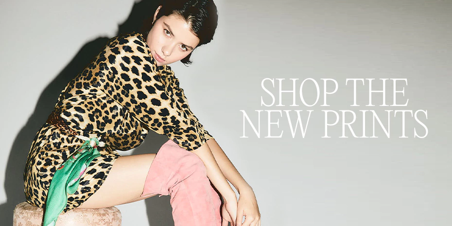

Cuidados especiales:
La mayoria de nuestras prendas estan teñidas y estampadas a mano, fabricadas con tejidos artesanales, sedas naturales, lino y otras telas de alta calidad. Cada uno de nuestros diseños unicos son confeccionados, fabricados y estampados por artesanos expertos. Para preservar la belleza y durabilidad de las prendas, recomendamos seguir estos cuidados especiales.
Instrucciones de lavado:
Para mantener la integridad y el aspecto original del lino, la seda y las otras telas que componen nuestras prendas, es fundamental que reciban lavados a mano, con agua fria y jabon suave. Los lavados mecanicos podrian dañar las fibras delicadas y afectar el color y la textura de la tela. Al lavar a mano, aseguras un trato suave y respetuoso con la tela. Utiliza un jabon suave, evitando productos quimicos agresivos. Llena un recipiente con agua fria, agrega una pequeña cantidad de jabon y sumergi la prenda, dejandola reposar por unos minutos. Esto garantiza que tu prenda conserve su brillo, suavidad y calidad para disfrutarla linda, colorida y duradera.
